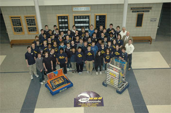
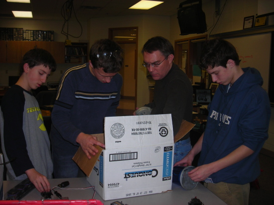
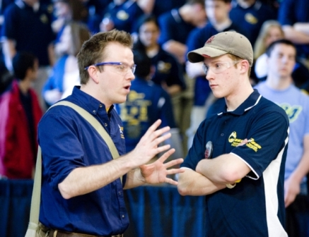

|
About the TechHOUNDS Team
Learn more about our multifaceted team with a look through our
overview, history, branches,
work environment, awards,
members and supporters, and community outreach.
| 
|
65 students
25 teachers, mentors, and volunteers
11 years' experience
6 weeks
30+ meetings
130+ hours of work
Countless GOALS
LIMITLESS Opportunity
|
|
Team Overview
The TechHOUNDS, Team 868, is Carmel High School's FIRST Robotics Team, with approximately sixty students and fifteen mentors who eagerly look forward to FIRST's new game every year. We pride ourselves on being a student-managed team that works hard to build a primarily student-constructed robot. After build season, we participate in two regional competitions, one of which being the Purdue Boilermaker Regional, and in certain years we have a chance to attend the Atlanta International Championship. This is all possible through our involved members and skilled engineers. Many of our team members have parents who return year after year, even when their students graduate, to serve as mentors and volunteers on the team as well. This is not simply an extra curricular activity in which students pass the time - it is a close-knit, team-driven organization in which students and adults alike learn new skills with technology, and even more importantly, the importance of good sportsmanship, gracious professionalism, and teamwork. Team 868 provides a learning experience that is not only rewarding, but one that builds character and changes lives.
|
Our History
In 1992, FIRST began offering challenging opportunities at the beginning of every year in the form of exciting games. Not only did this foster technical skills, but it encouraged the development of teamwork, entrepreneurship, and gracious professionalism. From the time this team was created by an existing mentor in the 2001-2002 season, we have always followed these ideals. We hope to keep the tradition of being a student-run team and having all of our seniors graduate from high school on to college. This year is our team's ninth year in the competition, and we are certainly looking forward to many more exciting seasons!
|

|
Our Branches
For maximum efficiency, our team is structured into six major divisions, each responsible for a different aspect of the team. Students are, of course, allowed to "float" between any of the branches of interest, as long as each student is aware of his/her responsibilities and assignments. Each division has its own manager, while everything is overseen by overarching Team Leaders. Our business-like structure ensures that individual tasks are accompished to ultimately complete a common goal during the build season.
Click here to see the details of each branch.
|
Our Environment
During the build season, Team 868 holds all meetings at the CHS Industrial Technology Department. We are fortunate to have a well-equipped machine shop; a print shop; a construction room where the playing field is built; computer labs for programming, animation, and website; and allowance to hold parent meetings in other areas of the school. We not only have a fantastic physical environment, but an environment of friendliness and teamwork. Some students are tutored by fellow members and mentors, as it is a standard that all students who travel must earn a grade of C or better. Everyday we look out for the best interest of each other and our goals.
|
| 
|
Our Awards
The TechHOUNDS have had much success throughout its years of existence - this can be seen in the amount of awards this team has won. We have been fortunate to have won a major judged award in almost every competition, including the presitigous Woodie Flowers Award for one of our mentors, and we have worked our way up to have played in the finals of the International Championship!
Click here to see a complete list of our awards.
|
Our Community Outreach
The TechHOUNDS have been involved in multiple community-aimed endeavors. Through programs such as FIRSTEP, we reach out to the younger generation to instill in them an experience that is driven towards teamwork, creativity, and hands-on learning. Throughout the year, our team occasionally works on other projects. We have made a set of award podiums for the Special Olympics with ramps for wheelchairs, and we also present our robot and other works to different areas in the community, such as the local public library and district schools.
|
Our Members and Supporters
Our team is comprised of high school students, teachers, engineers, technical specialists, and volunteers. Families of our members and mentors and our alumni are also a major support group of ours as we compete each year. Of course, Team 868 would not exist without our corporate sponsors as well, who recognize the importance of this endeavor and are truly making an investment in the future.
We thank everyone involved with our team for their time, energy, material resources, and monetary contributions!
Click here for a complete list of our sponsors.
|
|